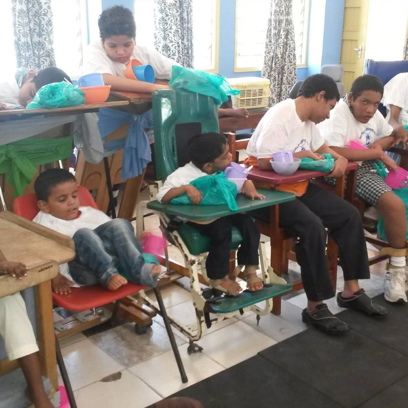
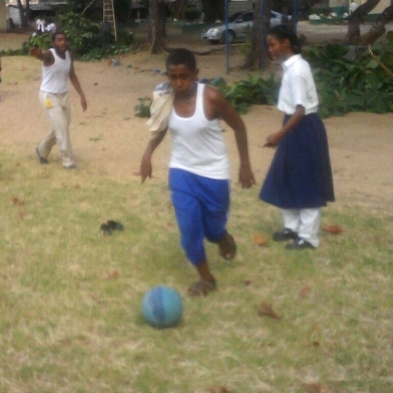

The Cerebral Palsy Foundation Centre (CPFC) is a special needs school and foundation based in Tudor, Mombasa, Kenya. We provide comprehensive support to children with cerebral palsy and other disabilities — including blindness, deafness, and mutism — through education, therapeutic intervention, and community acceptance.
Our comprehensive support services ensure that individuals with diverse needs receive the necessary resources, therapies, and assistance programmes to navigate life's challenges. Through organised events, workshops, and community-building activities, CPFC creates spaces where individuals with disabilities can come together, share experiences, and access support networks.

Advocacy lies at the heart of CPF's mission. We support efforts to raise awareness, advocate for policy changes, and combat discrimination against people with disabilities — driving systemic change and creating a more accessible society. Our empowerment programmes equip individuals with the skills and resources they need to live independently and achieve their goals.